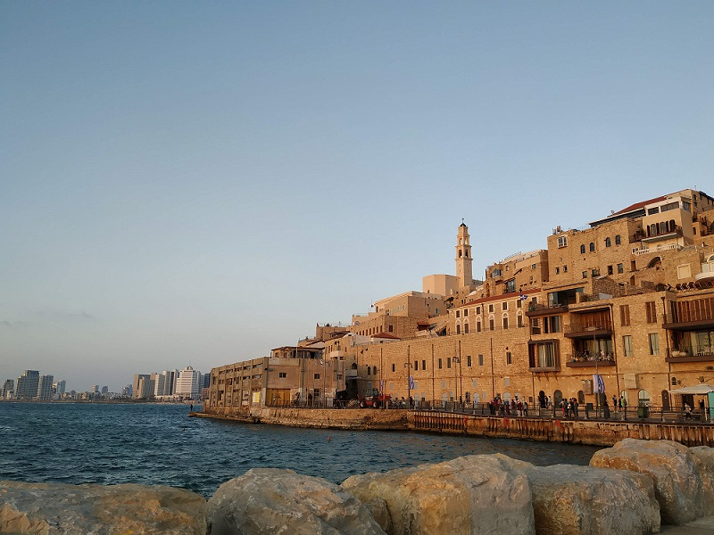
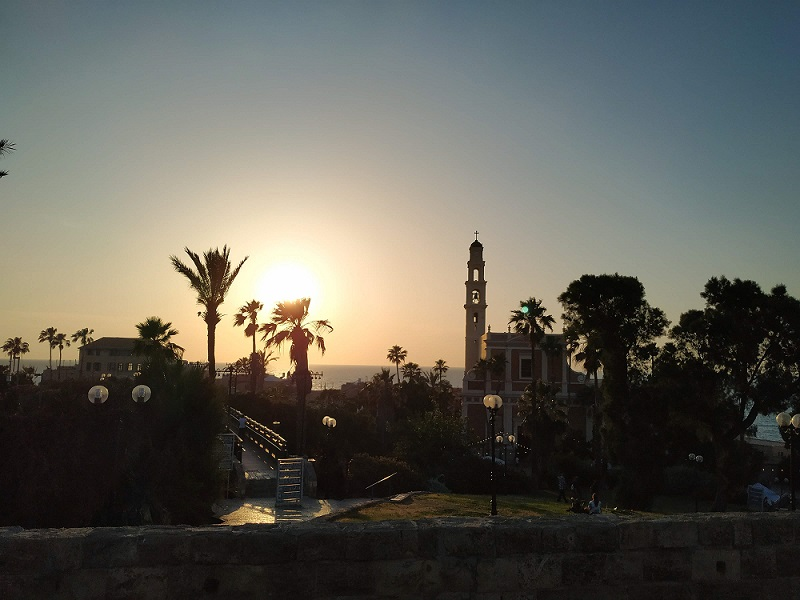
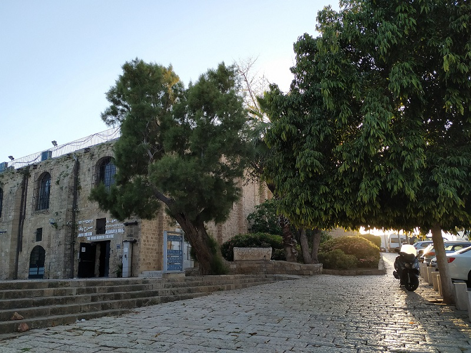
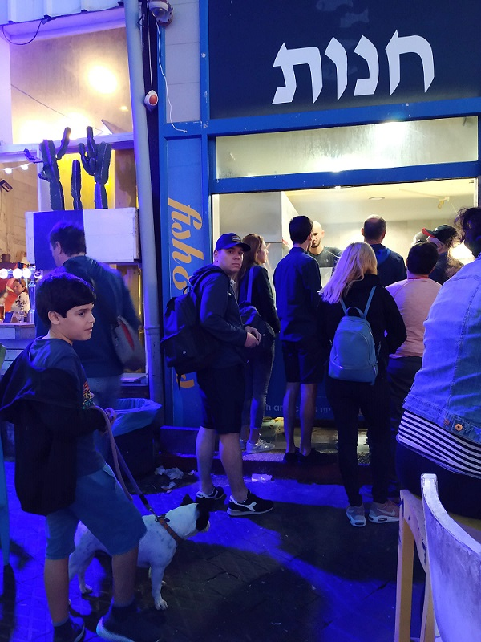
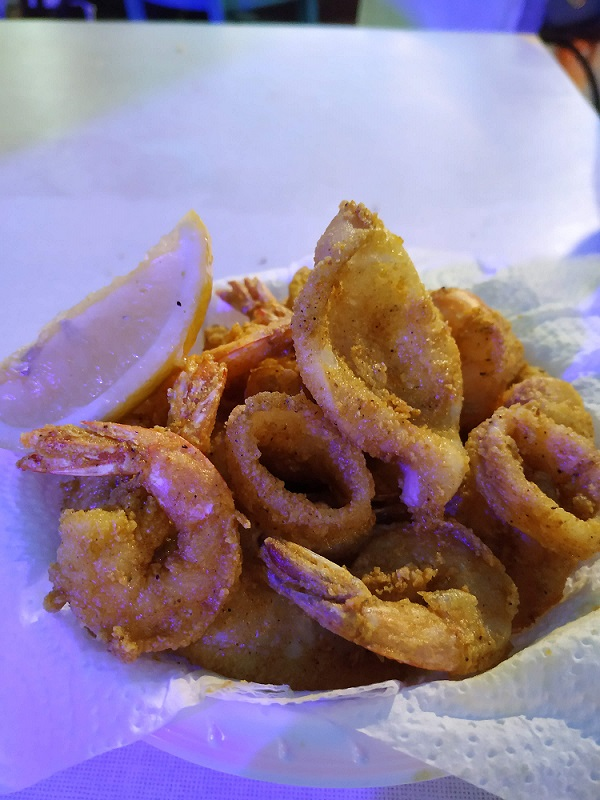
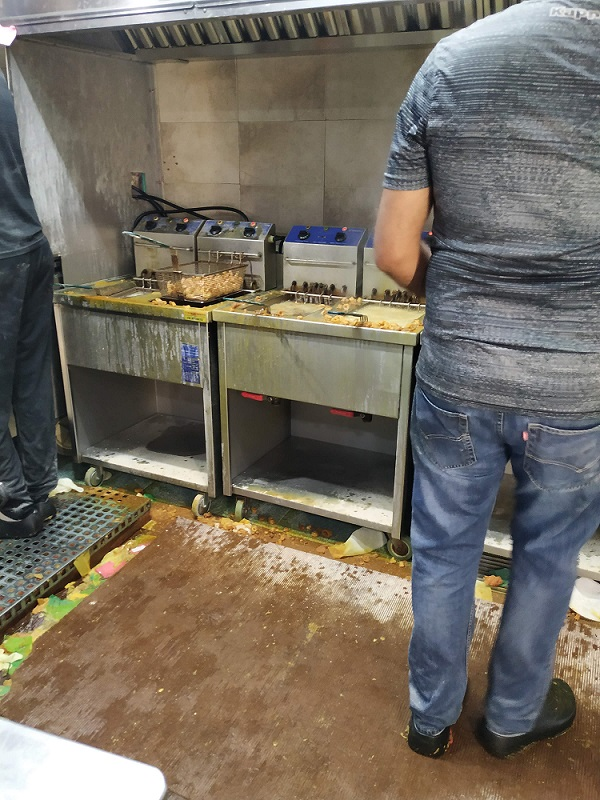
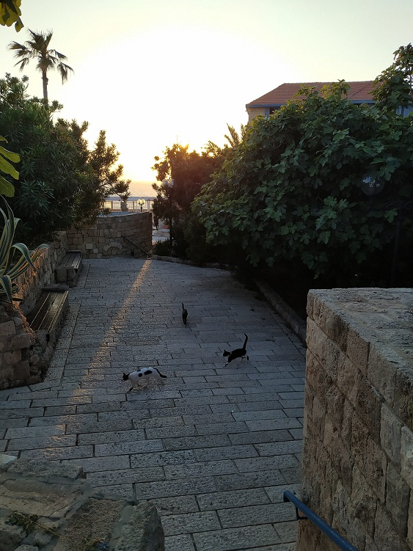
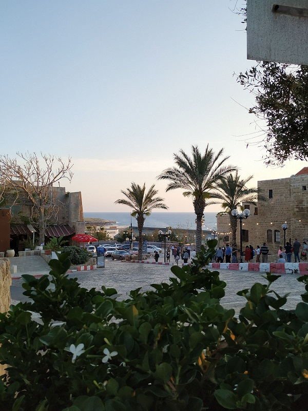
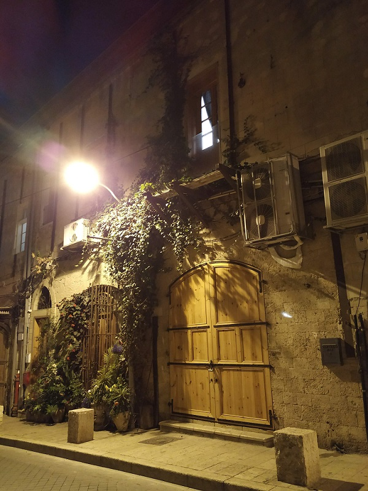

I am keen on an old architecture. Can't imagine how people could build all those buildings without modern knowledge, materials and instruments. Sometimes old architecture is so magnificent, just there are not so beautifulness nowadays. And it is for me, a person who loves huge cities and skyscrapers.
Moreover, imagination works great when walking through narrow ancient streets. I always imagine how people lived there hundreds years ago, where were their farms, how they protect a city. And it's not a secret that old city centres usually cited in picturesque places.



Of course, at such place attracts tourists. Often there could be found a cafe, that works a lot of years and became a legend. There is a one in Tel-Aviv. Couldn't make normal photos due to a long queue to buy a food there. Also, don't know a name of that place in English. They cook only shrimps and some kinds of fish (may be some more sea creatures). The menu not big, but the taste and atmosphere are great. Some people could say that there is not clean, but in such great places is often everything is fresh, clean and tasty.



Cats, flowers and night lighting are the other essential parts.



Summaries:
1 – Don't be afraid to eat in simple, popular cafes. The food will be always fresh there.
2 – Read some historical information about an ancient city. It will be much more interesting to walk there.
3 – I should take more photos, there are a lot of memories in my head but a few photos.